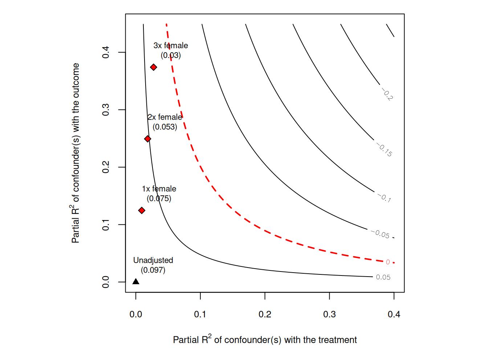

We can see that when we have high \(R^2\) between \(Y\) and \(Z\), bias is high. When we have high \(R^2\) between \(D\) and \(Z\), bias is high. In other words, the omitted variable needs to be somewhat highly correlated with both \(Y\) and \(D\) to have a high bias.
Cinalli and Hazlett paper has many stats, but we focus on three things we can report:
15.2 Partial \(R^2\) of treatment on outcome
The original purpose of this stat is to see how much variation treatment explains outcome after partialling out the covariates.
Also, this can be used for an extreme situation. Suppose the unobserved confounder \(Z\) explains all residual variance of the outcome, that is, \(R^2_{Y \sim Z|D,X} = 1\). What kind of situation we would have 0 effect?
It is shown if \(R^2_{Y \sim Z|D,X} = 1\), then \(R^2_{D \sim Z|X} \ge R^2_{Y \sim D|X}\) to make the effect go to 0. Roughly speaking, the correlation between omitted variable and outcome needs to be higher than the correlation between treatment and outcome to make the treatment effect go to 0.
15.3 Robust value
The robustness value \(RV_{q,α}\) quantifies the minimal strength of association that the confounder needs to have, both with the treatment and with the outcome, so that a confidence interval of level \(1 − \alpha\) includes a change of \(q \%\) of the current estimated value. \(q\) is often 1. That is, for the effect to go to 0, that robust value is the minimum value of the correlation between the omitted variable and the treatment and the correlation between the omitted variable and the outcome. Note this is about both the correlation between \(Z\) and \(D\) and the correlation between \(Z\) and \(Y\). They need to be both high to make the effect go to 0.
15.4 Bounds using observed covariate(s)
For the first two values, they are absolute values. You don’t know whether those are large or small, without context. They cannot be compared across studies.
Suppose there is a covariate \(x\) that you know from your domain knowledge that it is an important factor in explaining treatment or/and outcome. Then you can compare how bad the confounder needs to be compare to this covariate. This will give us some sense how much a confounder needs to be comparing to a strong covariate, in driving the effect to 0.
Sensitivity Analysis to Unobserved Confounding
Model Formula: peacefactor ~ directlyharmed + age + farmer_dar + herder_dar +
pastvoted + hhsize_darfur + female + village
Null hypothesis: q = 1 and reduce = TRUE
-- This means we are considering biases that reduce the absolute value of the current estimate.
-- The null hypothesis deemed problematic is H0:tau = 0
Unadjusted Estimates of 'directlyharmed':
Coef. estimate: 0.0973
Standard Error: 0.0233
t-value (H0:tau = 0): 4.1844
Sensitivity Statistics:
Partial R2 of treatment with outcome: 0.0219
Robustness Value, q = 1: 0.1388
Robustness Value, q = 1, alpha = 0.05: 0.0763
Verbal interpretation of sensitivity statistics:
-- Partial R2 of the treatment with the outcome: an extreme confounder (orthogonal to the covariates) that explains 100% of the residual variance of the outcome, would need to explain at least 2.19% of the residual variance of the treatment to fully account for the observed estimated effect.
-- Robustness Value, q = 1: unobserved confounders (orthogonal to the covariates) that explain more than 13.88% of the residual variance of both the treatment and the outcome are strong enough to bring the point estimate to 0 (a bias of 100% of the original estimate). Conversely, unobserved confounders that do not explain more than 13.88% of the residual variance of both the treatment and the outcome are not strong enough to bring the point estimate to 0.
-- Robustness Value, q = 1, alpha = 0.05: unobserved confounders (orthogonal to the covariates) that explain more than 7.63% of the residual variance of both the treatment and the outcome are strong enough to bring the estimate to a range where it is no longer 'statistically different' from 0 (a bias of 100% of the original estimate), at the significance level of alpha = 0.05. Conversely, unobserved confounders that do not explain more than 7.63% of the residual variance of both the treatment and the outcome are not strong enough to bring the estimate to a range where it is no longer 'statistically different' from 0, at the significance level of alpha = 0.05.
Bounds on omitted variable bias:
--The table below shows the maximum strength of unobserved confounders with association with the treatment and the outcome bounded by a multiple of the observed explanatory power of the chosen benchmark covariate(s).
Bound Label R2dz.x R2yz.dx Treatment Adjusted Estimate Adjusted Se
1x female 0.0092 0.1246 directlyharmed 0.0752 0.0219
2x female 0.0183 0.2493 directlyharmed 0.0529 0.0204
3x female 0.0275 0.3741 directlyharmed 0.0304 0.0187
Adjusted T Adjusted Lower CI Adjusted Upper CI
3.4389 0.0323 0.1182
2.6002 0.0130 0.0929
1.6281 -0.0063 0.0670
\(RV_{q=1} = 13.9 \%\). This means that unobserved confounders that explain 13.9% of the residual variance both of the treatment and of the outcome are sufficiently strong to explain away all the observed effect. On the other hand, unobserved confounders that do not explain at least 13.9% of the residual variance both of the treatment and of the outcome are not sufficiently strong to do so.
The robustness value for testing the null hypothesis that the coefficient of “directlyharmed” is zero (\(RV_{q=1,\alpha=0.05}\)) is 7.6%. This means that unobserved confounders that explain 7.6% of the residual variance both of the treatment and of the outcome are sufficiently strong to bring the lower bound of the confidence interval to zero (at the chosen significance level of 5%).
The partial \(R^2\) of directlyharmed with peacefactor means that, in an extreme scenario, in which we assume that unobserved confounders explain all of the left out variance of the outcome, these unobserved confounders would need to explain at least 2.2% of the residual variance of the treatment to fully explain away the observed effect.
The above numbers are for the absolute strength the confounder needs to be to explain away the treatment effect. The authors believe in this context, “female” is an important factor. Suppose the confounder is as important as “female”, what the partial \(R^2\) would be? It is shown that \(R^2_{Y \sim Z|X,D} = 12.5 \%\) and \(R^2_{D \sim Z|X} = 0.9 \%\). These two are both below the \(RV\) values. That means even if the confounder is as strong as “female”, it is not strong enough to explain away the treatment effect.
# plot bias contour of point estimateplot(sensitivity)

This plot shows that even 3 times as strong as “female”, the confounder is not strong enough to explain away the treatment effect.
15.6 sensitivity analysis for IV
Even with an IV model, we need sensitivity analysis. The worry would be there could be an unobserved confounder that affects both the instrument and the outcome.
Cinelli and Hazlett have a package “iv.sensemakr” for this. The usage is similar to “sensemakr”.
# loads packagelibrary(iv.sensemakr)# loads datasetdata("card")# prepares datay<-card$lwage# outcomed<-card$educ# treatmentz<-card$nearc4# instrumentx<-model.matrix(~exper+expersq+black+south+smsa+reg661+reg662+reg663+reg664+reg665+reg666+reg667+reg668+smsa66, data =card)# covariates# fits IV modelcard.fit<-iv_fit(y,d,z,x)# see resultscard.fit
Instrumental Variable Estimation
(Anderson-Rubin Approach)
=============================================
IV Estimates:
Coef. Estimate: 0.132
t-value: 2.33
p-value: 0.02
Conf. Interval: [0.025, 0.285]
Note: H0 = 0, alpha = 0.05, df = 2994.
=============================================
See summary for first stage and reduced form.
# runs sensitivity analysiscard.sens<-sensemakr(card.fit, benchmark_covariates =c("black", "smsa"))# see resultscard.sens
Sensitivity Analysis for Instrumental Variables
(Anderson-Rubin Approach)
=============================================================
IV Estimates:
Coef. Estimate: 0.132
t-value: 2.33
p-value: 0.02
Conf. Interval: [0.025, 0.285]
Sensitivity Statistics:
Extreme Robustness Value: 0.000523
Robustness Value: 0.00667
Bounds on Omitted Variable Bias:
Bound Label R2zw.x R2y0w.zx Lower CI Upper CI Crit. Thr.
1x black 0.00221 0.0750 -0.0212 0.402 2.59
1x smsa 0.00639 0.0202 -0.0192 0.396 2.57
Note: H0 = 0, q >= 1, alpha = 0.05, df = 2994.
=============================================================
See summary for first stage and reduced form.
The basic idea is to run an IV regression, then apply sensmakr to that model. In this case, the authors use “black” and “smsa” as benchmark covariates. The authors believe these are important factors. A quick look at the result we can see that a confounder as strong as “black” or “smsa” is not strong enough to explain away the treatment effect. We can also plot a contour plot to see how strong the confounder needs to be to explain away the treatment effect.
---title: "Sensitivity analysis of OLS with sensemakr"date: "2025-04-03"---## OVBSuppose we have a true model,$$ Y = \delta D + X \beta + \gamma Z + \epsilon $$However, we only observe $X$, not $Z$. We estimate the model$$ Y = \delta D + X \beta + u $$In this case, we have omitted variable bias (OVB). Cinelli and Hazlett (2020) shows that $$ |\hat bias| = \sqrt{\frac{R^2_{Y \sim Z|D,X} R^2_{D \sim Z|X}}{1-R^2_{D \sim Z|X}}} (\frac{\hat \sigma_{y.dx}}{\hat \sigma_{d.x}})$$We can see that when we have high $R^2$ between $Y$ and $Z$, bias is high. When we have high $R^2$ between $D$ and $Z$, bias is high. In other words, the omitted variable needs to be somewhat highly correlated with both $Y$ and $D$ to have a high bias.Cinalli and Hazlett paper has many stats, but we focus on three things we can report:## Partial $R^2$ of treatment on outcomeThe original purpose of this stat is to see how much variation treatment explains outcome after partialling out the covariates. Also, this can be used for an extreme situation. Suppose the unobserved confounder $Z$ explains all residual variance of the outcome, that is, $R^2_{Y \sim Z|D,X} = 1$. What kind of situation we would have 0 effect? It is shown if $R^2_{Y \sim Z|D,X} = 1$, then $R^2_{D \sim Z|X} \ge R^2_{Y \sim D|X}$ to make the effect go to 0. Roughly speaking, the correlation between omitted variable and outcome needs to be higher than the correlation between treatment and outcome to make the treatment effect go to 0.## Robust valueThe robustness value $RV_{q,α}$ quantifies the minimal strength of association that the confounder needs to have, both with the treatment and with the outcome, so that a confidence interval of level $1 − \alpha$ includes a change of $q \%$ of the current estimated value. $q$ is often 1. That is, for the effect to go to 0, that robust value is the minimum value of the correlation between the omitted variable and the treatment and the correlation between the omitted variable and the outcome. Note this is about both the correlation between $Z$ and $D$ and the correlation between $Z$ and $Y$. They need to be both high to make the effect go to 0.## Bounds using observed covariate(s)For the first two values, they are absolute values. You don't know whether those are large or small, without context. They cannot be compared across studies. Suppose there is a covariate $x$ that you know from your domain knowledge that it is an important factor in explaining treatment or/and outcome. Then you can compare how bad the confounder needs to be compare to this covariate. This will give us some sense how much a confounder needs to be comparing to a strong covariate, in driving the effect to 0.$$ k_D := \frac{R^2_{D \sim Z|X_{-j}}}{R^2_{D \sim X_j|X_{-j}}} $$where $X_{-j}$ represents all covariates other than the $j$th we pick as the benchmark covariate.$$ k_Y := \frac{R^2_{Y \sim Z|D,X_{-j}}}{R^2_{Y \sim X_j|D,X_{-j}}} $$## ExampleHere is an example from sensemakr documentation.```{r}# loads packagelibrary(sensemakr)# loads datasetdata("darfur")# runs regression modelmodel <-lm(peacefactor ~ directlyharmed + age + farmer_dar + herder_dar + pastvoted + hhsize_darfur + female + village, data = darfur)# runs sensemakr for sensitivity analysissensitivity <-sensemakr(model = model, treatment ="directlyharmed",benchmark_covariates ="female",kd =1:3)# short description of resultssensitivity# long description of resultssummary(sensitivity)``````{r}#| results: 'asis'# minimal reportingovb_minimal_reporting(sensitivity, format ="html")```Let's see how to interpret this. $RV_{q=1} = 13.9 \%$. This means that unobserved confounders that explain 13.9% of the residual variance both of the treatment and of the outcome are sufficiently strong to explain away all the observed effect. On the other hand, unobserved confounders that do not explain at least 13.9% of the residual variance both of the treatment and of the outcome are not sufficiently strong to do so. The robustness value for testing the null hypothesis that the coefficient of "directlyharmed" is zero ($RV_{q=1,\alpha=0.05}$) is 7.6%. This means that unobserved confounders that explain 7.6% of the residual variance both of the treatment and of the outcome are sufficiently strong to bring the lower bound of the confidence interval to zero (at the chosen significance level of 5%).The partial $R^2$ of directlyharmed with peacefactor means that, in an extreme scenario, in which we assume that unobserved confounders explain all of the left out variance of the outcome, these unobserved confounders would need to explain at least 2.2% of the residual variance of the treatment to fully explain away the observed effect.The above numbers are for the absolute strength the confounder needs to be to explain away the treatment effect. The authors believe in this context, "female" is an important factor. Suppose the confounder is as important as "female", what the partial $R^2$ would be? It is shown that $R^2_{Y \sim Z|X,D} = 12.5 \%$ and $R^2_{D \sim Z|X} = 0.9 \%$. These two are both below the $RV$ values. That means even if the confounder is as strong as "female", it is not strong enough to explain away the treatment effect. ```{r}# plot bias contour of point estimateplot(sensitivity)```This plot shows that even 3 times as strong as "female", the confounder is not strong enough to explain away the treatment effect. ## sensitivity analysis for IVEven with an IV model, we need sensitivity analysis. The worry would be there could be an unobserved confounder that affects both the instrument and the outcome. Cinelli and Hazlett have a package "iv.sensemakr" for this. The usage is similar to "sensemakr". ```{r}# loads packagelibrary(iv.sensemakr)# loads datasetdata("card")# prepares datay <- card$lwage # outcomed <- card$educ # treatmentz <- card$nearc4 # instrumentx <-model.matrix( ~ exper + expersq + black + south + smsa + reg661 + reg662 + reg663 + reg664 + reg665+ reg666 + reg667 + reg668 + smsa66,data = card) # covariates# fits IV modelcard.fit <-iv_fit(y,d,z,x)# see resultscard.fit# runs sensitivity analysiscard.sens <-sensemakr(card.fit, benchmark_covariates =c("black", "smsa"))# see resultscard.senssummary(card.sens)```The basic idea is to run an IV regression, then apply sensmakr to that model. In this case, the authors use "black" and "smsa" as benchmark covariates. The authors believe these are important factors. A quick look at the result we can see that a confounder as strong as "black" or "smsa" is not strong enough to explain away the treatment effect. We can also plot a contour plot to see how strong the confounder needs to be to explain away the treatment effect.```{r}#| results: 'asis'plot(card.sens, parm ="rf", sensitivity.of ="t-value", lim =0.08, kz =1, ky =1)```Unfortunately the package currently only allows for one instrument. Should not be too hard to modify it to be more general.---<!-- see-also-footer -->*Systematic treatment: [R](https://xiangao.github.io/causal_econometrics_guide/sensitivity-analysis.html) · [Julia](https://xiangao.github.io/causal_econometrics_julia/sensitivity-analysis.html).*